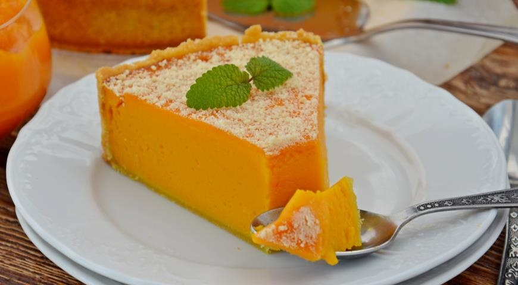

Homemade Fresh Pumpkin Pie

Description of Homemade Pumpkin Pie
Simple and quick to make pumpkin pie with condensed milk turns out to be very tender and delicious.
A crumbly sandy base and a delicate souffle are a great option for a home tea party.
Condensed milk gives the cake a light caramel note, and pumpkin makes it bright and healthy.
The pie is designed for 8 servings.
Ingredients of Homemade Pumpkin Pie
- Pumpkin - 450-500 g
- Condensed milk - 1 jar (380 g)
- Butter - 125 g
- Chicken youlks 2 pieces
- Chicken egg 1 pieces
- Flour - 250 g
- Sugar - 70 g
- Cinnamon
- Salt
- Ginger
Steps for making homemade pumpkin pie
- Prepare the ingredients for pumpkin pie.
- Sift wheat flour into a bowl, add butter. Stir until the mass turns into a fine crumb.
- Add sugar and chicken yolks.
- Quickly knead the shortbread dough, wrap it with cling film and place it in the
refrigerator for 30-40 minutes.
- We prepare a pumpkin souffle. Peel the pumpkin, cut it into arbitrary pieces and put it in a saucepan.
Pour 50-70 ml of water, cook over low heat for 20-30 minutes.
- We put the pieces of stewed pumpkin in a blender (without liquid), bring the mass to the state of puree.
- Add condensed milk, egg and spices.
- Mix until smooth.
- We put the shortbread dough in a baking dish, in the form of a base cake, forming the sides.
- Pour the pumpkin-milk mixture on the base.
- Place in a preheated oven and bake a pumpkin souffle pie
for 15 minutes at 200 degrees. Reduce the temperature to 170 degrees, wait another 30-35 minutes.
- Completely cooled pumpkin pie with condensed milk is cut into portions.
Enjoy your meal.